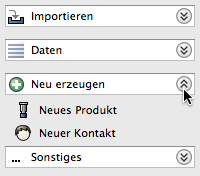

In der linken Navigationsleiste werden beim Ausklappen einer Expandbar die anderen Expandbars automatisch eingeklappt. ist diese Option nicht ausgewählt, bleiben die anderen unbeeinflusst.
Legt das Währungssymbol für alle Preisangaben fest. Ein Wechsel des Währungssymbols ändert nicht den Wert.
Es ist möglich, nur ein Symbol wie '€' zu verwenden, aber auch 'EUR' oder 'EURO '
Die Fakturama Startseite kann frei gewählt werden.
Voreingestellt ist "leer", und somit die Startseite im Ordner Vorlagen/Start/start.html.
Beispiele:
Siehe Webbrowser